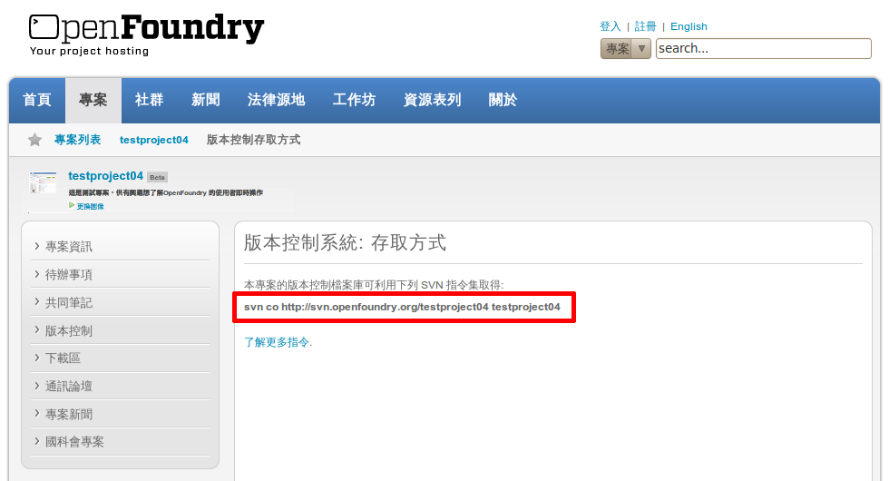
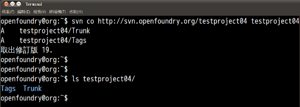
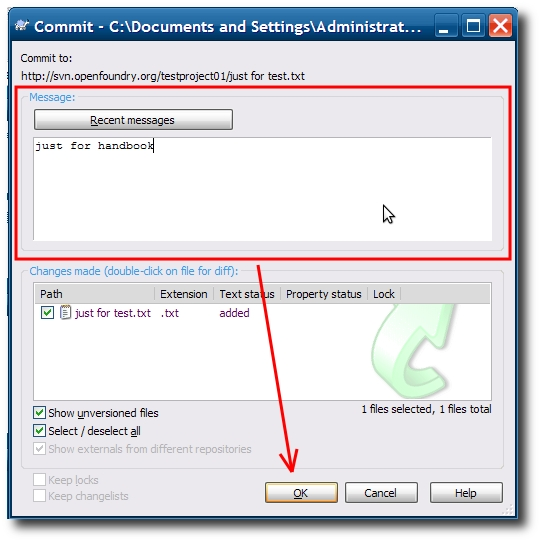

也紀念我們永遠的朋友 李士傑先生（Shih-Chieh Ilya Li）。
版本控制
-
本單元會簡介如何運用版本控制來進行專案協同開發。（ 是否積極利用版本控制進行專案開發，為國科會專案審核項目之一。）
-
在此簡單整理有關於版本控制的特定用語，方便讀者能夠了解手冊內容，相關資訊如下：
相關名詞 名詞說明 檔案庫 （Repository） 開發團隊共用的集中式版本檔案資料庫。 工作複本 （Working Copy） 開發者於本地端使用的檔案庫複本。 主幹 （Trunk） 程式主要的共享開發版本。 分支 （Branches） 程式的分支版本；主要用於釋出版本的功能添加、修補臭蟲。 標記 （Tags） 程式的特別版本；主要用於釋出版本或需要特別標記時使用 -
OpenFoundry 專案平台提供多樣的版本控制系統，為了達到快速上手在此僅介紹較為常見的版本控制系統— Subversion ；並用簡易的方式說明，如有需要更詳細的資訊可參考如下連結。
Subversion 指令中文操作手冊：https://twpug.net/docs/Subversion/
OSSF 工作坊影片教學：https://www.openfoundry.org/workshop/details/77
TortposeSVN 教學： https://www.openfoundry.org/tw/help/2324-version-control#TortoiseSVN -
操作流程步驟如下圖所示：
操作步驟 指令
-
手冊會先以指令方式來介紹 Subversion 操作；在此以 Ubuntu 作業系統為操作環境，並針對 Subversion 這套版本控制系統進行說明，相關資訊如下：
作業環境系統 命令模式操作 版本控制系統 文字編輯器 Ubuntu 10.04 終端機 Subversion 內建 gedit -
前置作業 － 請先確認工作環境，操作步驟如下：
-
Ubuntu 左上方選單列中依序點選【應用程式 → 附屬應用程式 → 終端機】功能。
-
指令：svn --version
（ 註：檢查 Ubuntu 是否安裝 Subversion ）
-
-
於 Ubuntu 下安裝 Subversion。（ 如果已有安裝可省略此步驟 ）
-
指令：sudo apt-get install subversion
-
指令：輸入用戶密碼。
-
-
查詢檔案庫 － 至 OpenFoundry 查詢專案檔案庫的連結位置；在此以 testproject04 為說明範例，操作步驟如下：
-
於右上方的搜尋項目中選擇專案輸入 testproject04 後，按下 Enter 尋找專案，會出現如下圖的搜尋結果。
（ 註：亦可直接於網址列上輸入專案的網址；通則 https://www.openfoundry.org/projects/[專案名稱]，
-
進入專案頁面後，於左側選單列中依序點選【版本控制 → 存取方式】功能，並記下專案檔案庫的位置。

-
-
建置工作複本 － 從 OpenFoundry 取出檔案庫並於本機端桌面建立 testproject04 資料夾來建置工作複本，操作步驟如下：
-
指令：cd ~（ 注意存放的位置 ）
-
指令：svn co https://svn.openfoundry.org/testproject04 testproject04
通 則：svn co https://svn.openfoundry.org/[專案名稱] [本機資料夾名稱或路徑]
（ 利用 Subversion 指令集取得專案的版本控制檔案庫，並建立 [testproject04] 資料夾 ）

-
-
瀏覽檔案庫 － 至 OpenFoundry 瀏覽專案檔案庫的架構；在此以 testproject04 為說明範例，操作步驟如下：
-
直接於網址列上輸入專案的 viewvc 網址，可以發現網頁呈現的架構與我們下載下來的檔案結構一樣。
（ 通則：https://www.openfoundry.org/projects/[專案名稱]，此例為 https://www.openfoundry.org/projects/testproject04/viewvc）
-
-
新增檔案 — 在本機端新增工作複本，並利用 testuser01 帳號上傳至 testproject04 專案檔案庫，操作步驟如下：
帳號 密碼 運用角色 testuser01 testuser01 專案參與者A -
指令：cd testproject04
（ 切換至工作複本的目錄位置 ）
-
指令：gedit test_01 通則：gedit [新增的檔案名稱]
（ 新增檔案於工作複本目錄內 ）
-
會開啟預設的文字編輯器 gedit，輸入內容後存檔，並關閉此視窗。
-
-
指令：svn status
（ 顯示目前版本控制狀態，出現 ? 代表有檔案沒有被 Subversion 控管 ）
-
指令：svn add test_01 通則：svn add [未加入svn的檔案名稱]
（ 將新增檔案加入至版本控制，檔案前出現 A 代表檔案已經被 Subversion 控管）
-
指令：svn ci test_01 通則：svn ci [要提交的檔案名稱]
（ 提交修訂的檔案至專案檔案庫中 ）
- 進入文字編輯，在此輸入異動明細方便未來的紀錄追蹤。
- 鍵盤輸入 ctrl+ o，寫入檔案於暫存檔。
- 鍵盤輸入 ctrl+ x，離開文字編輯畫面。
- 視窗會顯示傳送檔案資料的版本序號。
-
至 OpenFoundry 瀏覽專案檔案庫的架構，於網址列上輸入 https://www.openfoundry.org/projects/testproject04/viewvc，確認 testproject04 架構是否變更。
（ 註：第一次需要輸入帳號及密碼 ）
-
操作步驟 視窗
-
接著我們介紹以 Windows XP 作業系統為操作環境，並針對 Subversion 這套版本控制系統進行說明，相關資訊如下：
作業系統環境 視窗軟體 版本控制系統 備註 Windows XP TortoiseSVN Subversion -
下載軟體 － 請至此網址 https://tortoisesvn.net/downloads 下載 TortoiseSVN，下載流程礙於篇幅在此不多加說明。
-
安裝軟體 － 依照一般安裝程序進行安裝，TortoiseSVN 安裝完成後，作業系統會要求重開機，請重新啟動您的電腦；安裝流程礙 於篇幅在此不多加說明。
-
建置工作複本 － 從 OpenFoundry 取出 testproject04 檔案庫並於本機端建置工作複本，最後利用 testuser02 帳號 commit 變更至 testproject04 專案檔案庫，操作步驟如下：
帳號 密碼 運用角色 testuser02 testuser02 專案參與者B -
於桌面新增一個 TEST 資料夾用來存放工作複本，並於資料夾內按下右鍵並點選【SVN Checkout...】選項，準備從 OpenFoundry 取出 testproject04 檔案庫。
-
於 URL of repository 欄位中輸入 testproject04 檔案庫的位置，確認其他設定無誤後點選【OK】按鈕。

-
完成後會出現目前的版本序號。
-
-
新增檔案
-
接下來於工作複本資料內新增檔案，並在此檔案上按右鍵依序點選【TortoiseSVN →Add】，將此檔案納入版本控制系統中。
-
接下來提交修訂或新增的檔案至 testproject04 專案檔案庫中 在此檔案上按右鍵點選【SVN Commit...】，準備提交至專案檔案庫中。
-
使用者輸入版本更動明細（ 建議輸入修改的資訊方便日後進行控管 ），確認無誤後點選【OK】按鈕。

-
輸入 testuser02 帳號及密碼，輸入完成後，請點選【OK】按鈕。
-
視窗會顯示傳送檔案資料的版本序號，結果如下圖所示。
-
至 OpenFoundry 瀏覽專案檔案庫的架構，於網址列上輸入 https://www.openfoundry.org/projects/testproject04/viewvc ，確認 testproject04 架構是否變更。
-
Address：No.128, Sec.2, Academia Rd., Institute of Information Science, Academia Sinica, Nangang District, Taipei City 11529, Taiwan (R.O.C).
Privacy Policy. Terms-of-use